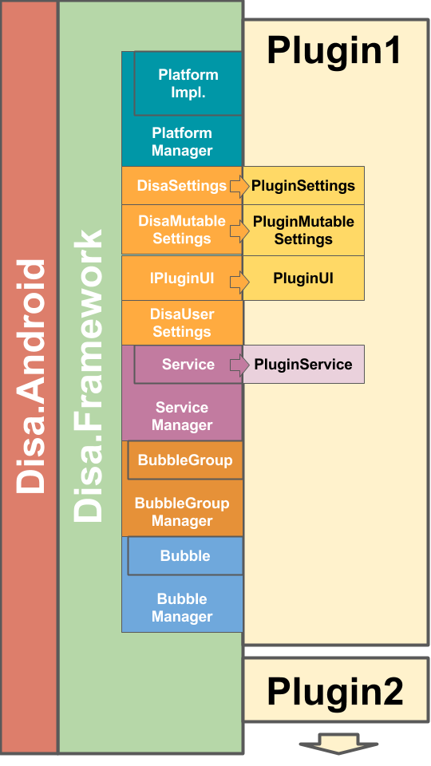

2 The Disa Framework
The Disa Framework provides a set of logical building blocks to provide developers everything they need to build plugins for their favorite instant messaging platforms (or anything that they can really make out of it). The building blocks cover the following categories:
- A set of platform abstractions that allow you to interact with a particual platform (e.g., Android) in a platform agnostic manner.
- PlatformManager, PlatformImplementation
- A categorized set of setting implementations for you to derive from to support your plugin's setting needs
- DisaSettings, DisaMutableSettings, IPluginUI, DisaUserSettings
- A Service Manager and defined Service lifecycle to allow your plugin to register and expose its functionality in a Disa front-end (e.g., Disa.Android).
- Service Manager, Service
- A conversation thread manager and a representation for a conversation thread
- BubbleGroupManager, BubbleGroup
- A conversation element manager and representation for various conversation elements
- BubbleManager, Bubble
The following diagram gives a high-level overview of the Disa.Framework components.
